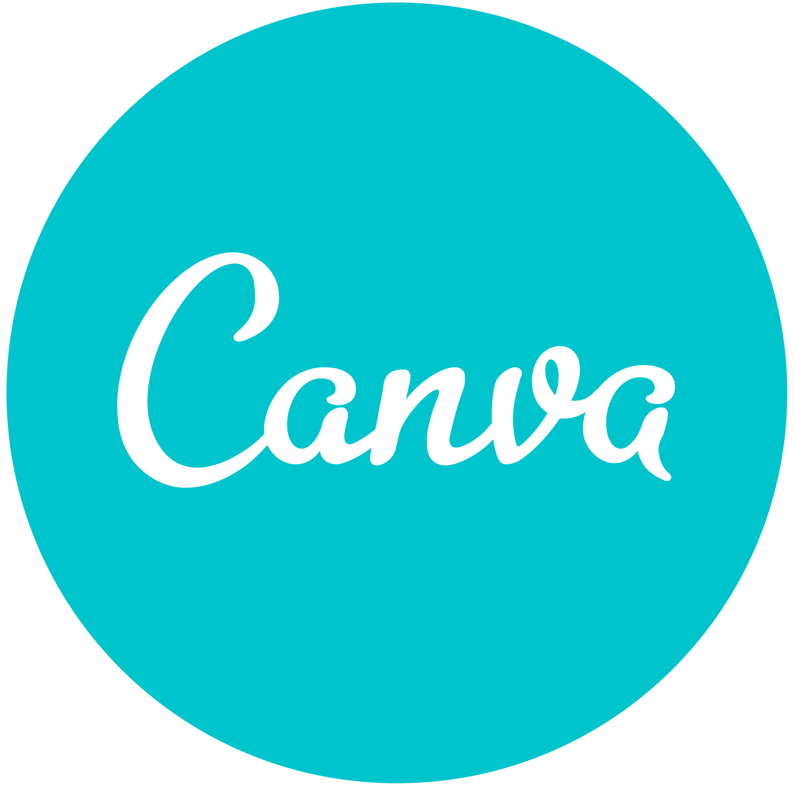

Détails du Projet
Ce travail a pour objectif de réaliser une campagne de communication institutionnelle pour valoriser l'attractivité économique et touristique d'une commune française, à travers un événement culturel. Cela inclut la création de supports variés, tels que des bannières web, une affiche, et une page d'accueil responsive, afin de toucher un public français ciblé.
Nous avons décidé de mettre en avant la fête de l'Huître au Cap-Ferret, car l'une de mes camarades y a vécu.
Nous avons opté pour un thème simple, en nous concentrant sur un concept d'illustration avec des couleurs vives et dynamiques pour inciter les gens à participer à cet événement.
Ma contribution
Dans ce projet, j'ai eu l'occasion de toucher à plusieurs aspects. J'ai principalement travaillé sur les bannières et la carte, mais j'ai notamment avancé sur certaines maquettes sur Figma. Chacune de nous a contribué à différentes tâches, ce qui a amélioré notre collaboration.
Outils utilisés
Pour ce projet, nous avons beaucoup utilisé Canva pour créer le dossier de conception, Figma pour réaliser les maquettes de la page d'accueil du site et Illustrator pour la création des cartes.



Mon avis
J'ai réalisé à quel point la coordination était importante dans ce projet. Certes, nous avons perdu pas mal de temps au départ à choisir notre thème et à nous organiser. Cependant, au final, on a vraiment bien réussi ! On a créé un travail dont nous pouvons être fières. Bien que les maquettes auraient pu être améliorées, l'ensemble du projet est vraiment plaisant.